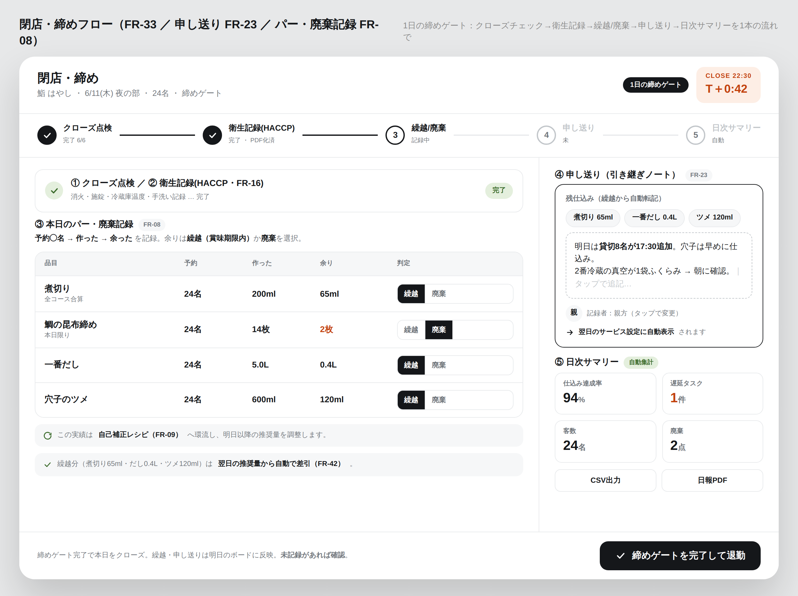

PrepFlow — 縦ぎりスライス③ モード任意機能（既定OFF）。コアはモード無しで完結し、必要な店だけ解放する
ラベル／HACCP はモード制（既定OFF）。どちらも当日ボードの完了イベントを購読し、両モードは冷蔵庫QR（FR-49）で合流（有効な方の情報だけ表示）。在庫/WMS・原価には踏み込まない。
Eラベル／在庫レンズ スライス完了→自動ラベル→QR残量→繰越→自己補正（FR-20/45/46/49/42/09）ラベルモード ON 時 ・ 既定OFF

1仕込み完了（チェックオフ）
完了と同時に発火
当日ボードで完了タップ→ラベル自動発行のトリガー。手書きゼロ。
FR-05 ・ event: task.completed
完了イベント

2自動ラベル発行
期限を自動印字＋残量QR
品名・仕込み日時・使用期限（賞味から自動）・量・担当・残量QR・FIFO曜日色。
FR-20 ・ Label(QR, expire_at)
発行ラベル
＋期限
＋期限

3「今ある半製品」ビュー
FIFO・期限アラート
発行済みラベル＋残量で「今、冷蔵庫にある作り置き」を古い順に。期限近は警告。
FR-45 ・ 残量・期限（在庫ではなく半製品の現在地）
かざして
読み取り
読み取り

4冷蔵庫QRレンズ
かざすと在庫＋期限
その庫の在庫・期限を即表示（読み取り専用）。出し入れの都度スキャンはしない。
FR-49/50 ・ ゾーン在庫（WMS化しない）
残った/使い切り
/廃棄
/廃棄
5QR残量記録 → 環流
手入力ゼロで学習へ
営業後にラベルQRで残量/使い切り/廃棄を1タップ。繰越(FR-42)・自己補正(FR-09)へ。
FR-46 ・ WasteLog → 翌日推奨に反映 ↻
FHACCP スライス基準設定→温度記録→チェック→締めゲート→PDF（FR-16/51/49/33）HACCPモード ON 時 ・ 既定OFF

1基準設定（モードON）
チェック項目・基準温度
衛生チェック項目と冷蔵/冷凍の基準温度・加熱CCPを設定。位置はゾーン単位の1タップ。
FR-16/51 ・ 基準値（temp_min/max）
基準値
2温度記録
冷蔵庫QRからその場で
かざして温度を記録。基準超過は時間色（朱）アラート。加熱の中心温度（CCP）も。
FR-51/49 ・ TempLog（逸脱は朱）
日次記録

3電子チェックシート
衛生記録（紙の置換）
日次の衛生チェックを電子化。記録者（FR-43）も残す。導入動機・粘着になる。
FR-16 ・ ChecklistRecord（記録者付き）
締めの一部
として確認
として確認

4締めゲートで記録漏れ確認
クローズの1本に統合
締めフロー（FR-33）の②衛生記録ステップで、HACCP記録の完了をゲート。
FR-33 ・ 記録漏れゼロを担保
月次・査察
5HACCP PDF 出力
保健所提出フォーマット
温度ログ＋チェック記録をPDFに統合。査察・提出に使える形で出力（PDFKit）。
FR-16/44 ・ PDF（毎営業日くり返し ↻）
モード制の一線（守る）
冷蔵庫QR＝レンズ（読み取り専用）。出し入れの都度スキャンはさせない＝在庫/WMSに踏み込まない（R-17）。整合は点検モード（FR-50）で時々取るだけ。
既定OFF。コア（仕込み）はモード無しで完結。プリンタ未接続でもPDF/プレビューにフォールバック（R-16）。アレルゲンは参考・人が確定（NFR-06）。